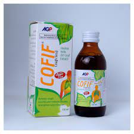
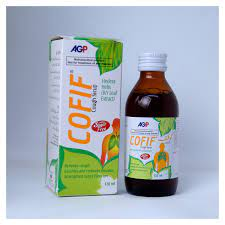

Panadol Original Tablets is a mild analgesic and antipyretic, and is recommended for the treatment of most painful and febrile conditions
Antiemetics may help reduce nausea and vomiting by speeding up the emptying of the gut to relieve the nausea and uncomfortable feeling of fullness in the stomach.
Rigix is used to treat allergy, urticaria, and allergy-induced asthma, and to decrease hives and pruritus.
a medicated, syruplike fluid, usually flavored and nonnarcotic or mildly narcotic, for relieving coughs or soothing irritated throats.
A drug that reduces pain, fever, inflammation, and blood clotting. Acetylsalicylic acid (ASA) is a commonly used drug for the treatment of pain and fever due to various causes.
Digex is a digestive enzyme and anticholinergic combination. It works by helping the body to digest protein, starch, and fat. It also decreases bowel spasms.
FLAGYL is indicated in the treatment of acute intestinal amebiasis (amebic dysentery) and amebic liver abscess.
We also provide a range of health and wellness services that help you manage your health and prevent illness. At our pharmacy we prioritize the patient safety and convenience.

We believe that everyone deserves access to quality health care and we strive to make that reality for our community.